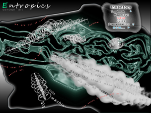

FINAL PROJECTS
Final projects should build on core concepts in the course. These will be presented formally in the last week of classes in an 'artist-talk' format complete with documentation on all stages of the process (initial ideas, sketches/images, storyboards, recordings, prototypes, writing, etc.) You will be required to hand your documentation in as part of the final project.
Although project are due at end-of-semester, it is highly encouraged that you start right away and take full advantage of of all course resources...
Some examples from previous semesters
Extropics http://www.alloysoftware.com/pdal/extropics/

Documentation: http://dm.risd.edu/~djeliazkov/CS1950/Extropics/index.html
Project Overview
Words will appear on-screen encapsulated in visuals similar to cellular organelles and/or other microscropic creatures. Visually, these creatures will be translucent and monochromatic. These word-creatures will be procedurally animated and will move about the screen. The initial population will be based on a concordance of a source text of poems. Creatures will then be able to recombine (i.e. eat eachother) to form chain-like organisms, based on a probability distribution from a word level N-gram run on the source texts. As the user watches, words will accrete to form phrases, and ultimately sentences – and then paragraphs. The user will be able to interact with the creatures through a “fishtank” UI metaphor, whereby the user can drop additional words into the tank by drag-and-drop from a palette of words.
Technical Implementation Overview
The project will be implemented in Java as an applet, and the goal will be to create a project which will run smoothly in the browser. To this end, the project will be subject to the technical limitations placed on an applet (RAM, file system access, etc.) and thus an important aspect of the technical design will be in minimizing the memory and resource footprint of the application so that it will run as an applet.
The structure of the application will be multi-threaded and will center around a backend layer, and a frontend presentation layer - probably in separate threads. Each word creature will be procedurally animated, and will also move based on a primarily reactive AI controller. The AI controller will have goals such as eating targets and avoiding walls and obstacles, which will subsume eachother. A core goal will be to create engaging and evocative visuals for the creatures, which will be based on pre-made primitives but also be paramaterized randomely at run time so as to create a wide variety of unique-looking creatures.
The goal is to simulate a large number of creatures on the backend thread and cull creatures which are not visible from the front-end rendering layer. An N-gram will be created (probably N=3 to N=5) based on a source body of input text, probably poems which are in the public domain. This N-gram will then be used to stochastically control whether two creatures can combine, based on the word sequence information which will be obtained from the N-gram.
Special period creatures will populate the "primordial soup" allowing sentences to form (again, based on the N-gram data) when necessary, and ultimately even paragraphs. A UI layer will also be implemented allowing users to interact with the creatures, control the overall simulation settings, and add additional words.
Task List
- Backend Functionality
- Procedural animation of chains
- Markov chain implementation and integration
- Subsumptive creature AI, including targetting
- Data structures
- Hit testing
- Visuals
- Overall visual design
- Build visual elements for procedural recombination
- Procedurally generated creature appearance based on visual elements
- Animate creatures appendages
- Support creature chain merging
- Animate creature merging
- Spatial Indexing
- Front End UI
- Incorporate user interactions with creatures
- Add drag and drop palette
- Other misc. user interaction features
- Final polishing
Hotspots
- Animation
- Realistic motion for creatures, with smooth interpolation
- Text aliasing and legibility when a lot of creatures are on screen
- Particle system to simulate water dynamics and to make the world of the creatures more "lively"
- Infrastructure
- Creating a structure so that creatures can properly consume words and even other creatures once they have achieved a certain growth
- The final creature may not contain any relevant text, based on the way it had consumed other objects containing text
- User Interface
- Allowing for user interaction could affect natural behavior algorithm
- Users may add words which are unknown to our internal library
- Sound
- Sound will be considered, but may not bring a valuable aspect to this project
How it Ends
Project Description:
"How it Ends" re-uses and manipulates words taken from a poem written by the artist's twin sister about the artist's funeral. These words appear, move, change size, and die according to a set of rules which treats each word as a living organism that survives by eating its own kind. The work is both a commentary on the cannibalistic nature of many forms of digital poetry, as well as the cannibalistic nature of many close relationships.
task list:
1. determine words to use in poem
2. display words
3. update word state
4. kill dead words (visibly on the screen)
5. move words according to updated state
6. repeat 3-6 until no killings have been made three times in a row
7. fade out final iteration of poem, start over
hot spots:
- making all processes occur in the correct order
- finding an effective (non-cheesy) metaphor for killing words
- tweaking the rules of the game so that each iteration is interesting, but there isn't too many similarities between iterations
---
McDunco V3
McDunCo recombines the basic elements of highway signs - shape, size, background colors, fonts, images, brand names, slogans - to create a pastiche. The new signs that fly by are both recognizable and foreign. The program produces an endless iteration of ‘advertisements’ each with minor differences that mimic the mindless derivations of pervasive advertising lingo.
V3 incorporates a sense of progression. The spatial conditions, the speed of travel, and the billboards evolve and change over time, to create different environments, from the wide open mid-west interstates, to times square, to the vegas strip. Idiosyncratic and iconic elements from each type of landscape will be included, among with certain billboard styles and types that never change. A sense of local environement vs. global constants will emerge
Task List-
1. Fix current bugs
⁃ make visuals smoother
⁃ separate billboard generator class from app
⁃ fix opengl implementation issues
⁃ thread billboard generator class
2. New Environment (Time Square)
⁃ collect sign type/slogan types
⁃ new grammar file
⁃ new environemnt / spatial layout /speed
⁃ implement rss reader for tickertape billboards
⁃ implement video textures for lcd billboards (possibly)
3. Combine existing environment with new environment
⁃ develop a method for slow transition between 2 environments
Risk - Area -
- opengl implementation and smooth visuals!!!!!!!
Documentation
Title: Who's Life is it Anyway?
An automatic autobiographic blogging machine that generates personal status updates for social networking sites like twitter and facebook. The status are built from a tagged term database of events, places, things, people to a create contextually relevant status. The context is based on a generated physical location (such as a city) and from that the current time and weather is pulled from the internet.
Things to do:
build tagged term database
build context generation system
build status generation system
build physical interface
do a bunch of other stuff.
-motion sensor
-lcd screen
-bluetooth communication to server pc
Final documentation(with source): http://projects.caleblarsen.com/ambv2/
.t.h.e...c.i.t.y...i.s...m.a.d.e...o.f...w.o.r.d.s. (TCMW)
TCMW defines a notion of space in the digital age. One enters the name of a real city, town, or country; and like Italo Calvino's mirror-city of Valdrada, TCMW creates the location's digital counterpart of sociocultural architecture in which the buildings themselves are visual poetry composed of words that were mined from sentences across the Internet that name the location specified.
In this way, each page generated by TCMW represents a city as it is really composed, through the interaction of people, language, and ideas, to bring to light what is too often invisible in our physical experiences.
TASK LIST
o Make building mask methods to place text.
- Masks for arbitrary text.
- Algorithms to place text with regard to word/phrase length.
o Submit on-line search for city.
Retrieve results from search (webpages).
o Parse webpage to obtain relevant words and phrases.
DEPENDENCIES
(no significant dependencies; each component can be developed and tested with test data that makes it independent of any other component)
RISK-AREA
Part aesthetic and part technical, I foresee some difficulties in determining what text to use to build the cities.
http://plantarchy.us/katko/processing/yelling-at-a-wall/
http://dm.risd.edu/~mchoueiter/pdal/SoundSpace/index.php
http://dm.risd.edu/~mchoueiter/pdal/Manifesto/index.php
A Firefox Extension for Automated Web-Exploration and Visualization
(Topics: Natural Language Processing, Firefox extensions, Software Art)
Project Overview:
The project will consist of a Firefox extension which will take control of the browser and explore the internet in a digital drift, or dérive based on information it gleans from determining the concept of a page, and rules governing the program's "personality." The extension will determine the key concepts or topics a page contains, perform a related search based on its own "interests," and then navigate to a new page which it will then examine. The extension will attempt to subvert the user's interactions with the browser as a way of exercising control over the user. Additionally, as the computer is 'exploring' the internet, it will construct a map of the territory it explores (as was common to non-virtual, psychogeographical dérives.)
Task List:
- Create the skeleton for the extension, including a javascript overlay which gives us access to the current page and allows us to manipulate it.
- Develop a set of basic browsing functions which allow us to perform processes like changing pages and accessing the browser history.
- Develop a set of data collection/parsing functions to access different aspects of the page through the Document Object Model, such as meta-data, headers, page titles, links, as well as regular text on the page.
- Develop a set of page-manipulation functions which produce the impression of an internet-browsing entity and give the appearance of intelligence, thought, and intent. These functions include things like page highlighting, scrolling, and other page manipulation functions.
- Develop the "personality" of the entity by scripting alerts and determining an intelligence and probabilistic flow for the way it parses pages and navigates through them (i.e. probabilities for performing searches, following links, etc).
Risk Areas:
The major challenge with this project is the process of creating a Firefox extension, as that process is notoriously a rather complex and involved one.
We are also not entirely certain of what of our ideas will actually be possible within the constraints of the mozilla/chrome/javascript context, particularly regarding some of the manipulations we hope to perform on the user interface and the cursor.
http://mjacobs.net/pdal/helloworld/HelloWorld.xpi
Technical Implementation Overview:
1. Natural Language Processing
A given web-page will be parsed in order to extract the information it contains. The text will then be examined by the program, which will use a concept mining algorithm based on statistical and linguistic analysis to disambiguate the main concepts in the web page the way a human does based on context.
The program will then choose one of these concepts to pursue based on an internal set of rules determining its "interests" and perform a search on this concept and navigate to a new web page.
2. Firefox Extension/Software Engineering
Hooks into Firefox will be programmed in XUL and Javascript.
3. Internet 'Map' Visualization
Java will be used to generate graphical representations of the 'path' the computer took through the internet.
Download extension and source code
Title: Textualizer
http://deathofapunchline.tumblr.com/post/35094960
Textualizer approaches music visualization from a non-synesthasia angle. Instead of having music sync to abstract 2 or 3 objects according to FFT, BPM, and other audio analyses, Textualizer attempts to make the visualizing of your music a "reading" experience. Using the ID3 tag of a song to select source texts based on the artist, song name, lyrics, album, and other background information, Textualizer will allow the user to travel through a literary word-scape. Textualizer does not try to make text move, animate, or become symbolic- it just makes your favorite pop song readable.
Title: “mémoire involontaire no. 1”
http://thefollowingphrases.com/memory/memory.html
This text begins as a short, composed memory. Periodically and involuntarily its words are replaced in real-time by synonyms and coordinate terms extracted from the Wordnet database using the RiTa library for Processing. As time progresses the memory becomes unanchored from its original significance, drifting into new configurations as the old words are replaced by similar words with their own semantic associations and currents. After a certain amount of time has elapsed the text enters a second state where it attempts to “remember” its original form, where the text longs to reconstruct the original memory as it was first remembered and composed.